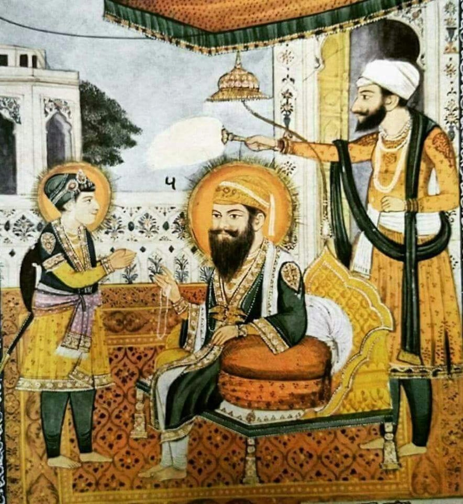
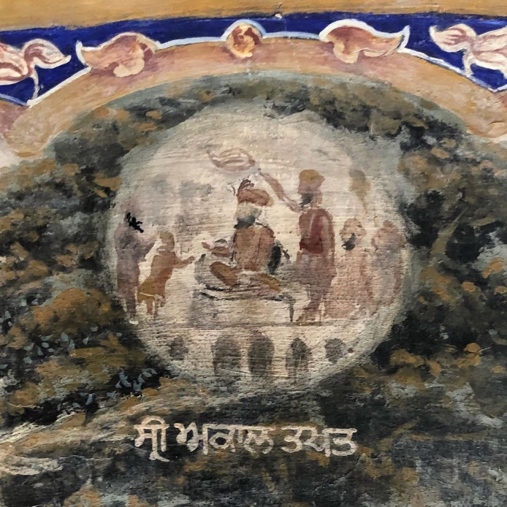
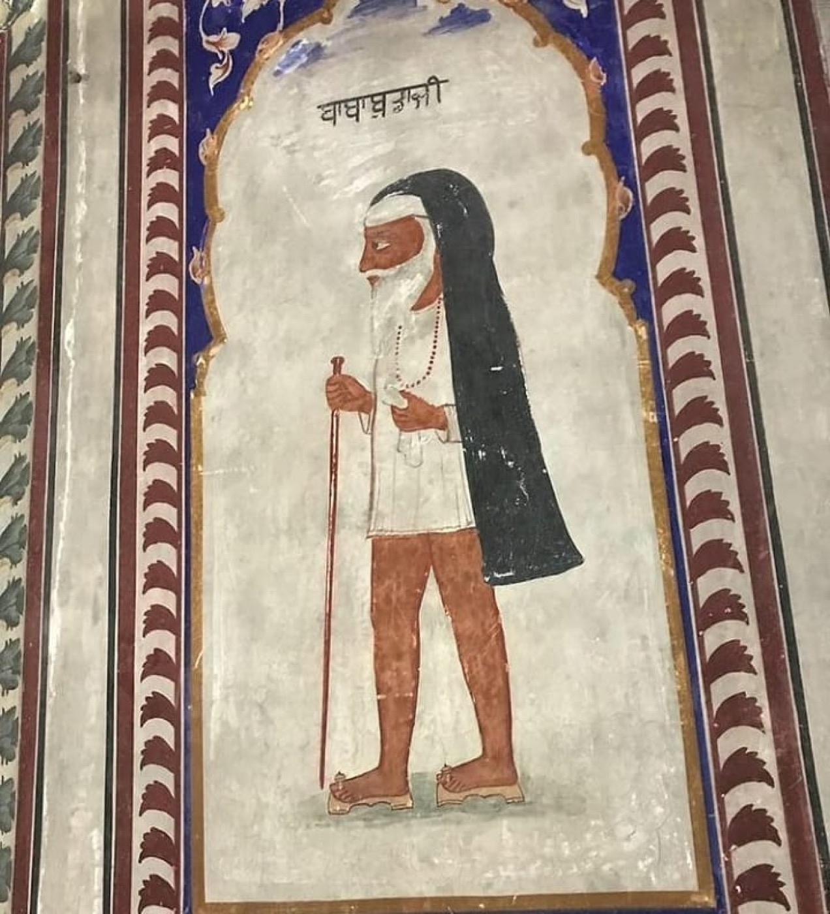
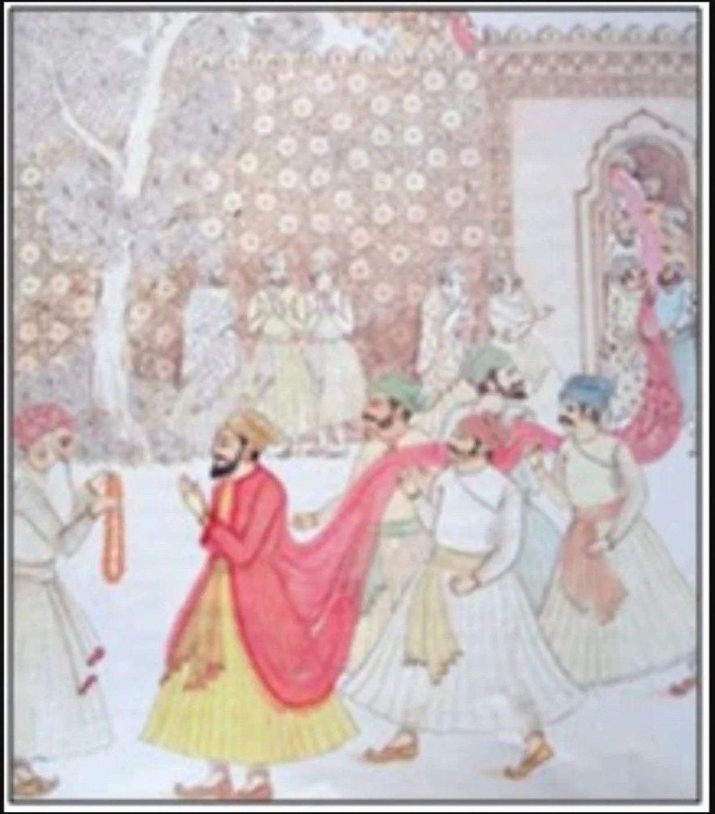

Resources · Gurpurab
ਬੰਦੀ ਛੋੜ ਦਿਵਸThe Giver Who Frees the Captives
Four sakhis of Sri Guru Hargobind Sahib Ji, from the two swords of Amritsar to the 52 kalian of Gwalior, with the Gurbani that lights them.
੨੩ ਕੱਤਕ ੫੫੮ ਨਾਨਕਸ਼ਾਹੀ · 8 November 2026
Every Diwali, lamps line the parkarma of Sri Harmandir Sahib and the sarovar holds a second sky. For Sikhs the night carries a particular memory: Sri Guru Hargobind Sahib Ji, who would not walk out of prison alone. This is the story behind Bandi Chhor Divas, told in four sakhis, and the Gurbani that helps us read it.
ਬੰਦਿ ਖਲਾਸੀ ਭਾਣੈ ਹੋਇ ॥ ਹੋਰੁ ਆਖਿ ਨ ਸਕੈ ਕੋਇ ॥ — ਜਪੁ ਜੀ ਸਾਹਿਬ, ਅੰਗ ੫
Release from bondage comes only by Your Will; no one else has any say.
ਇੱਕ ਨਜ਼ਰ · At a glance
| Bikrami (ਗੁਰਬਾਣੀ ਪਾਠ ਦਰਪਣ) | CE | Place | |
|---|---|---|---|
| ਪ੍ਰਕਾਸ਼ · Prakash | ੧੬੫੨, ਹਾੜ ਵਦੀ ੧, ਐਤਵਾਰ | — | ਵਡਾਲੀ ਸਾਹਿਬ, six miles from Amritsar |
| ਗੁਰਗੱਦੀ · Gurgaddi | ੧੬੬੩, ਜੇਠ ਵਦੀ ੮ | — | ਕੋਠੜੀ ਸਾਹਿਬ, Amritsar |
| ਸ੍ਰੀ ਅਕਾਲ ਤਖ਼ਤ ਸਾਹਿਬ | ੫ ਹਾੜ ੧੬੬੩ (teaching deck) | — | Amritsar |
| ਗਵਾਲੀਅਰ · Gwalior | sources differ | sources differ | Gwalior Fort |
| ਜੋਤੀ ਜੋਤਿ · Jyoti Jyot | ੧੬੯੫, ਚੇਤ ਸੁਦੀ ੫ (per Darpan) | 28 March 1638 | ਕੀਰਤਪੁਰ ਸਾਹਿਬ |
| Age · Guriai | ੪੨ ਬਰਸ ੯ ਮਹੀਨੇ ੧੯ ਦਿਨ · ੩੨ ਬਰਸ ੧੦ ਮਹੀਨੇ ੧੨ ਦਿਨ |
ਸਾਖੀ ੧ — ਗਵਾਲੀਅਰ ਕਿਉਂ? · Why Gwalior

The heat of shaheedi. Chandu, a minister at Jahangir's court, nursed a grudge against the house of Sri Guru Nanak Dev Ji. Through his envy and the emperor's order, Sri Guru Arjan Dev Ji were held in Lahore and tortured. Fire was all around and the body blistered. Sain Mian Mir Ji, a Muslim faqir who loved Guru Sahib Ji, came, saw, wept, and offered to intervene. Guru Sahib Ji asked them to let the Will of Akal Purakh unfold, and said, in the words of a later poet:
ਕਿਆ ਹੂਆ ਤਨ ਜਲ ਰਹਾ, ਹਮ ਸ਼ਾਂਤ ਹੈ ਹਰੀ ਨਾਮ ਸੇ ।
What if the body burns? With Hari's Naam we are at peace.
Before going to Lahore, Guru Sahib Ji had Baba Buddha Ji place the tilak of guriai on the young Sri Guru Hargobind Sahib Ji, and asked that the sangat be told openly that Sri Guru Hargobind Sahib Ji now sat on the gurgaddi.
Two swords. On the gurgaddi Sri Guru Hargobind Sahib Ji put on two swords: ਪੀਰੀ (the spiritual authority) and ਮੀਰੀ (the temporal). Piri is named first, because the right to bear arms grows out of wisdom and bandagi, never the other way round. Sri Guru Gobind Singh Ji later gave the same pair another name: ਦੇਗ਼ and ਤੇਗ਼, the langar pot and the sword.
On 5 Harh 1663 Bk Guru Sahib Ji laid the foundation of Sri Akal Takht Sahib, the throne of the Timeless One, facing Sri Harmandir Sahib. Only three pairs of hands built it: Guru Sahib Ji's, Baba Buddha Ji's and Bhai Gurdas Ji's. Guru Sahib Ji told the sangat that from that day they would bow to the true throne of Akal and to no false worldly throne.

Your turban, or Jahangir's? The dhadis Abdul and Nath Mal sang in the darbar:
ਦੋ ਤਲਵਾਰੀ ਬੱਧੀਆਂ, ਇਕ ਮੀਰੀ ਦੀ ਇਕ ਪੀਰੀ ਦੀ ।
ਇਕ ਅਜਮਤ ਦੀ, ਇਕ ਰਾਜ ਦੀ, ਇਕ ਰਾਖੀ ਕਰੇ ਵਜੀਰ ਦੀ ।
…
ਪੱਗ ਤੇਰੀ, ਕੀ ਜਹਾਂਗੀਰ ਦੀ ।
(Transcribed from our teaching deck. This is a dhadi vaar, not Gurbani.)
The sangat brought horses and weapons as offerings, and 52 young men became Guru Sahib Ji's guard. A court that had just taken the life of Sri Guru Arjan Dev Ji now watched Sri Guru Hargobind Sahib Ji wear a sword. Vichar: the vaar asks whose turban truly carries honour. A turban bought with power, or one the sangat crowns with love?
ਸਾਖੀ ੨ — ਕਿਲ੍ਹੇ ਵਿੱਚ · In the fort

Gwalior. On Jahangir's order Guru Sahib Ji were held in Gwalior Fort, a hill fortress for royal prisoners. Many hill rajas were already captive there. The way the sakhi is told, Guru Sahib Ji kept to nitnem, kirtan and bandagi in the fort, and the imprisoned rajas came to sit in that sangat.
What people said, and Bhai Gurdas Ji's answer. Bhai Gurdas Ji, who lived through these years, wrote a pauri that sets out what people were saying about Sri Guru Hargobind Sahib Ji, then answers it:
ਪਾਤਿਸਾਹ ਘਰਿ ਆਵਦੇ ਗੜਿ ਚੜਿਆ ਪਾਤਿਸਾਹ ਚੜਾਇਆ ।
ਸਚੁ ਨ ਲੁਕੈ ਲੁਕਾਇਆ ਚਰਣ ਕਵਲ ਸਿਖ ਭਵਰ ਲੁਭਾਇਆ ।
ਅਜਰੁ ਜਰੈ ਨ ਆਪੁ ਜਣਾਇਆ ॥੨੪॥
— ਭਾਈ ਗੁਰਦਾਸ ਜੀ, ਵਾਰ ੨੬, ਪਉੜੀ ੨੪
Meaning. Emperors used to come to the door of Guru Sahiban, and now an emperor has sent Guru Sahib Ji up into a fort. But truth cannot be hidden by hiding it. Sikhs are drawn to the lotus feet like bees. Guru Sahib Ji bore the unbearable and did not make a show of it.
Vichar. ਅਜਰੁ ਜਰੈ, bearing what cannot be borne, is the mark of the house of Sri Guru Nanak Dev Ji. Guru Sahib Ji answered prison with patience, not with complaint. Where in your own life could you meet hardship with ਸਹਿਣਸ਼ੀਲਤਾ rather than noise?
Baba Buddha Ji's chaunki. The sangat of Amritsar longed for darshan. Baba Buddha Ji, already very old and the one who had placed the tilak on five Guru Sahiban, led them on foot to Gwalior, singing Gurbani all the way. They circled the fort in reverence and turned home. Guru Sahib Ji blessed that chaunki to go on for ever, and each night, around 8 pm, Baba Buddha Ji's chaunki still goes round Sri Harmandir Sahib.
The bee and the lotus. The fort walls were high, but love's road was not closed. A bee finds the lotus by its scent across miles, and the sangat walked roughly 800 km to reach Guru Sahib Ji. The fort held Guru Sahib Ji's body. The sangat's hearts were already bound at their feet.
ਸਾਖੀ ੩ — ਰਿਹਾਈ · The release

The order. The sakhi tells that Sain Mian Mir Ji spoke for Guru Sahib Ji before the emperor. This is the same faqir who had wept at the shaheedi of Sri Guru Arjan Dev Ji. The order for release was carried to Gwalior by Wazir Khan, a courtier of Jahangir (not the later Nawab of Sirhind), and Hari Das of the fort brought Guru Sahib Ji the news.
"Not alone." Guru Sahib Ji would not walk out and leave behind the rajas who had shared their sangat in the fort. A condition was set: only as many as could hold Guru Sahib Ji's garment could leave. Guru Sahib Ji had a chola stitched with 52 ਕਲੀਆਂ. Each raja took hold of one, and all 52 walked out of Gwalior Fort with Guru Sahib Ji. From that day the sangat has called Guru Sahib Ji ਦਾਤਾ ਬੰਦੀ ਛੋੜ, the giver who frees the captives.
ਬੰਧਨ ਕਾਟਿ ਬਿਸਾਰੇ ਅਉਗਨ ਅਪਨਾ ਬਿਰਦੁ ਸਮ੍ਹਾਰਿਆ ॥
ਗੁਰਸਿਖ ਰਾਖੇ ਗੁਰ ਗੋਪਾਲਿ ॥ — ਆਸਾ ਮਹਲਾ ੫, ਅੰਗ ੩੮੨
Meaning. Cutting away the bonds and setting aside our failings, Akal Purakh kept true to Their own way. Guru Ji, the Sustainer of the world, protects the Gursikhs.
Vichar: the ਲੜ. The rajas had no strength of their own, only a tassel held tight. In the language of Gurbani, holding Guru Sahib Ji's ਲੜ (hem) means staying attached to Guru Sahib Ji's teaching. Whoever keeps hold is carried along. Ask: what is my "kali"? Nitnem, sangat, seva? What makes me let go?
ਸਾਖੀ ੪ — ਘਰ ਵਾਪਸੀ · Coming home
Data Bandi Chhor Sahib. Where Guru Sahib Ji were held, Gurdwara Data Bandi Chhor Sahib now stands on Gwalior Fort. The place an emperor made a prison, Guru Sahib Ji made a place of release.
The lamps of Amritsar. The sangat lit lamps in joy at Guru Sahib Ji's return to Amritsar. The tradition has kept that night ever since: on Diwali Sri Harmandir Sahib shines with ਦੀਪਮਾਲਾ, and Sikhs keep the day as Bandi Chhor Divas.
ਦੀਵਾ ਮੇਰਾ ਏਕੁ ਨਾਮੁ ਦੁਖੁ ਵਿਚਿ ਪਾਇਆ ਤੇਲੁ ॥
ਉਨਿ ਚਾਨਣਿ ਓਹੁ ਸੋਖਿਆ ਚੂਕਾ ਜਮ ਸਿਉ ਮੇਲੁ ॥੧॥ — ਆਸਾ ਮਹਲਾ ੧, ਅੰਗ ੩੫੮
Meaning. The One Name is my lamp, and into it I have poured the oil of suffering. Its light has dried that oil away, and my meeting with death is over.
ਦੀਵਾਲੀ ਦੀ ਰਾਤਿ ਦੀਵੇ ਬਾਲੀਅਨਿ । ਤਾਰੇ ਜਾਤਿ ਸਨਾਤਿ ਅੰਬਰਿ ਭਾਲੀਅਨਿ ।
… ਗੁਰਮੁਖਿ ਸੁਖ ਫਲ ਦਾਤਿ ਸਬਦਿ ਸਮ੍ਹਾਲੀਅਨਿ ॥੬॥ — ਭਾਈ ਗੁਰਦਾਸ ਜੀ, ਵਾਰ ੧੯, ਪਉੜੀ ੬
Meaning. On the night of Diwali lamps are lit, and stars of every kind fill the sky. Like flowers and pilgrim crowds, they pass. The Gurmukh keeps the lasting gift through the Shabad.
Vichar: two kinds of lamp. Outer lamps go out when the oil runs dry. The lamp of Naam burns suffering itself as its oil, just as Guru Sahib Ji stayed a light in the dark of the fort. Light a diya this Diwali, and ask what lamp is burning inside.
ਅੱਜ ਸਾਡੇ ਲਈ · For us today
Guru Sahib Ji did not walk free alone. They brought everyone with them. On Bandi Chhor Divas, light a diya, and then hold out a kali to someone still inside the fort. ਗੁਰੂ ਸਾਹਿਬ ਜੀ ਇਕੱਲੇ ਆਜ਼ਾਦ ਨਹੀਂ ਹੋਏ — ਸਭ ਨੂੰ ਨਾਲ ਲੈ ਕੇ ਆਏ ।
Where the sources differ. We give the Bikrami dates from Gurbani Paath Darpan. The year and length of the detention are not settled. One source places Guru Sahib Ji's meeting with the Sikhs at Batala on Phagun sangrand 1676 Bk rather than at Diwali. The names of Wazir Khan and Hari Das, and Sain Mian Mir Ji's part, come from tradition as recorded on SikhiWiki.
Dates from ਗੁਰਬਾਣੀ ਪਾਠ ਦਰਪਣ (Gurbani Paath Darpan). Gurbani checked against BaniDB. Paintings are public domain; photographs are credited where they appear.
Download the study guide (PDF) ↓